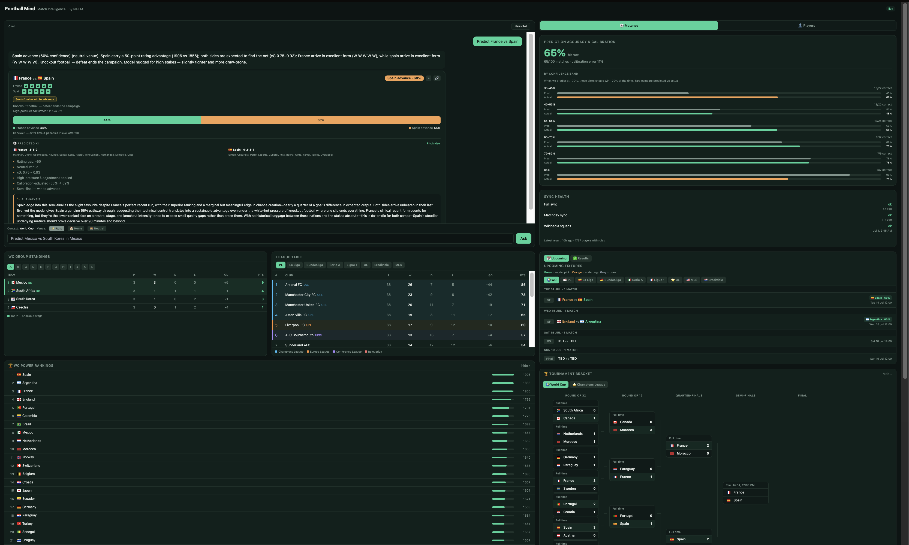

DESTACADO • IA + ANÁLISIS
FootballMind
Plataforma de inteligencia futbolística que integra modelos Elo y Dixon–Coles validados, datos en vivo, analítica de jugadores y análisis asistido por IA.
Abrir FootballMind ↗Ingeniero de Datos y Analista Cuantitativo
INGENIERO DE DATOS · ANALISTA CUANTITATIVO
Soy Ingeniero de Datos y Analista Cuantitativo en Arizona State University, especializado en pipelines de datos, automatización, modelado estadístico e IA aplicada. En Cotality, mi trabajo redujo los costos operativos en más de un 15 % y ayudó a capacitar a más de 100 empleados en nuevos flujos de datos.
Sistemas seleccionados de análisis predictivo, datos públicos y desarrollo de IA.

DESTACADO • IA + ANÁLISIS
Plataforma de inteligencia futbolística que integra modelos Elo y Dixon–Coles validados, datos en vivo, analítica de jugadores y análisis asistido por IA.
Abrir FootballMind ↗
Plataforma analítica con Flask y React que transforma más de 6 billones de dólares de USAspending.gov en visualizaciones presupuestarias interactivas.
Abrir aplicación ↗
Benchmark controlado de seis herramientas de programación con IA que implementan la misma aplicación Flask, evaluadas en un panel comparativo interactivo.
Abrir aplicación ↗Profundidad técnica, rigor analítico y resultados medibles.
Reduje los costos operativos en más de un 15 % mediante automatización y capacité a más de 100 empleados en nuevos pipelines de datos en Cotality.
Python, R, SQL y JavaScript aplicados a orquestación ETL, modelado estadístico, sistemas full stack e IA aplicada.
Campeón de Florida en SkillsUSA, 18.º a nivel nacional y dentro del 10 % superior en una competencia global de hacking ético.
Abierto a oportunidades en ingeniería de datos, análisis cuantitativo y desarrollo de IA.
Contáctame